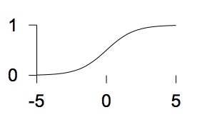
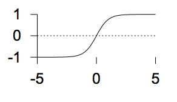
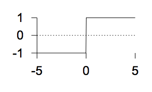

MCB111: Mathematics in Biology (Fall 2024)
- Feedforward networks
- A single neuron
- What a single neuron can learn: to be a binary classifier
- Learning as a communication channel
- Learning as inference (Probabilistic interpretation of learning)
- Making further inferences
- Monte Carlo implementation for a single neuron
- Generalization to many neurons, many layers and many outcomes
- Feedback networks
week 08:
Neural Networks - Learning as Inference
In this lecture, I follow David Mackay very closely. In particular his lectures 15 and 16, which correspond to Chapters 39, 41 and 42 of his book Information Theory, Inference, and Learning algorithms.
Feedforward networks
A single neuron
A single neuron (Figure 1) has
- The inputs \(\mathbf{x}=(x_1,\ldots,x_I)\),
- One output \(y\) which is called the activity,
- Parameters \(\mathbf{w}=w_1,\ldots,w_I\), usually called the weights.
The neuron adds up the weighted sum of the inputs into a variable called the activation \(a\),
Figure 1. One neuron (from D. Mackay's chapter 39).
where \(w_0\) called the bias is the activation in the absence of inputs.
The activity of the neuron is a function of the activation \(y(a)\). Several commonly used forms for the activity are
-
The linear logistic function
 \(y(a) = \frac{1}{1+e^{-a}}\)
-
The sigmoid (tanh) function
 \(y(a) = tanh(a)\)
-
The step function
 \(y(a) = \left\{ \begin{matrix} 1& a > 0\\ 0& a \leq 0 \end{matrix} \right.\)
Depending in how we combine many single neurons, there is essentially two types of networks: feedforward networks, where all the information flows in one direction, and feedback networks where all nodes are connected (Figure 2).
Figure 2. Two type of networks (from D. Mackay's Lecture 15).
Parts of a single neuron
As a recap, the basic concepts of a neuron are
-
The Architecture. A single neuron has a number \(I\) of inputs \(x_i\), and one output \(y\). Each input has associated a weight \(w_i\), for \(0\leq i \leq I\).
-
The Activation. In response to the inputs, the neuron computes the activation
and \(x_0=1\), so we can add the bias in the same equation.
-
The Activity rule. The neuron output is set as a logistic/step function of the activation and the inputs \(y(\mathbf{x},\mathbf{w})\).
We are going to study a neuron in which the output is between (0,1), such that the activity \(y(\mathbf{x},\mathbf{w})\) is given by the logistic function
\[y(\mathbf{x},\mathbf{w}) = \frac{1}{1+e^{-a}} = \frac{1}{1+e^{-\mathbf{w}\cdot \mathbf{x}}}.\]In the sections, we will discuss some motivation for the linear logistic function.
The activity \(y(\mathbf{w},\mathbf{x})\) can be seen as the probability according to the neuron that the input deserves a response, and the neuron fires (\(y=1\)) or that the input is not worth a response and the neuron does not fire (\(y=0\)).
Figure 3. Neuron activity for a neuron with two inputs as a function of the inputs. The values of the weights are: w0 = -15, w1 = 2 w2 = 1. We use the logistic function to describe the activity of the neuron.
The space of weights
Consider the simple situation of only two input to the neuron \(\mathbf{x}=(x_1, x_2)\), and only two weights \(\mathbf{w}=(w_1, w_2)\) and no bias. The neuron’s activation is given by
\[y = \frac{1}{1+ e^{-(w_0 + w_1 x_1 + w_2 x_2)}}\]and we can plot it as a function of the inputs as in Figure 3.
Figure 4. Effect on neuron activity of a zero weight.
If a weight is zero, there is no activity change associated with changes in the corresponding input, as described in Figure 4.
Figure 5. Effect on neuron activity of the bias term.
The effect of changing the value of the bias can be observed in Figure 5.
The effect of changing the value of the weights can be observed in Figure 6.
Figure 6. Effect on neuron activity of changes in one of the weights.
We can also use contour plots, in which we represent in the inputs space lines corresponding to different values of the activity \(y\). Using contour plots we observe in Figure 7 the effect of making the weight larger or smaller in absolute magnitude. Doubling the weights makes the contour lines closer to each other, while halving the weight make the same contour lines wider.
Figure 7. Effect on neuron activity of scaling the weights. The contours correspond to the values a = 0.0, 1, and -1. Arrows point in the direction of the weight vector.
What a single neuron can learn: to be a binary classifier
Imagine that you want to separate apples from oranges from a bucket in which they are all mixed up. Would you trust a single neuron to do that?
The learning rule
The central idea of supervised learning is this: given a number of examples of the input vector \(\mathbf{x}^{(1)}\ldots \mathbf{x}^{(N)}\) and their target output \(t^{(1)}\ldots t^{(N)}\), we hope the neuron will learn their relationship (whichever that is).
Training the network requires finding the values of the weights that best fit the training data. If the neuron is well trained, given an input \(\mathbf{x}\) will produce an output \(y\) which is very close to the target \(t\).
Data: \(D = \{\mathbf{x}^{(1)}, t^{(1)},\ldots, \mathbf{x}^{(N)}, t^{(N)}\}\)
Outputs: \(\{y^{(1)},\ldots, y^{(N)}\}\)
Error: \(\{y^{(1)}-t^{(1)},\ldots,y^{(N)}-t^{(N)}\}\) where we expect these errors to be small.
Thus “learning” is equivalent to adjusting the parameters (weights) of the network such that the output \(y^{(n)}\) of the network is close to the target \(t^{(n)}\) for all \(n\) examples.
Have we done this before in a different context?
In our apples and oranges example, let’s give an assignment of \(t=1\) for an apple, and \(t=0\) for an orange. In a well trained neuron will produce assignments \(y\) similar to these:
Orange_1 y(Orange_1, w) = 0.01
Apple_1 y(Apple_1, w) = 0.91
Orange_2 y(Orange_2, w) = 0.09
Orange_3 y(Orange_3, w) = 0.05
Apple_2 y(Apple_1, w) = 0.97
How to do that? We find a function to optimize.
The error function
For each input \(\{\mathbf{x}^{(n)}, t^{(n)}\}\), we introduce an objective function that will measure how close the neuron output \(y(\mathbf{x}^{(n)},\mathbf{w})\) is to \(t^{(n)}\). That objective function is also called the error function.
We introduce the error function
\[G(\mathbf{w}) = - \sum_{n=1}^{N} \left[ t^{(n)} \log(y^{(n)}) + (1-t^{(n)}) \log(1-y^{(n)})\right],\]where \(y^{(n)} = y(\mathbf{x}^{(n)},\mathbf{w})\).
Figure 8. Contribution to the error function G(w) for one data point as a function of y(n) for the two possible cases t(n)=0 and t(n)=1. (From D. Mackay's video lecture 15.)
</div>
For each data point \((\mathbf{x}^{(n)},t^{(n)})\), its contribution to the error function is given by Figure 8.
As a binary classification problem, such as sorting apples from oranges, we can interpret \(y(\mathbf{x},\mathbf{w})\) and \(1-y(\mathbf{x},\mathbf{w})\) (both between zero and one) as the probabilities of the two possible events: apple (\(t=1\)) or orange (\(t=0\)) for an input \(\mathbf{x}\) given the weights of the neuron, then \(G(\mathbf{w})\) is the “information content” (remember w01 lectures?) of the data \(\{t^{(1)},\ldots, t^{(N)}\}\).
Backpropagation
The training process is an exercise of minimizing \(G(\mathbf{w})\), that is, of adjusting the weights so that \(G(\mathbf{w})\) reaches it lowest value.
Notice that \(G(\mathbf{w})\) is bound by below by zero,
\[G(\mathbf{w}) \geq 0,\]and it is zero only when \(y^{(n)}(\mathbf{x},\mathbf{w}) = t^{(n)}\).
To minimize, we take the derivative of \(G(\mathbf{w})\) respect to one of the weights \(w_i\) given by
\[\frac{\delta G(\mathbf{w})}{\delta w_i} = -\sum_n \left[\frac{t^{(n)}}{y^{(n)}}-\frac{1-t^{(n)}}{1-y^{(n)}}\right]\, \frac{\delta y^{(n)}}{\delta w_i} = -\sum_n \frac{t^{(n)}-y^{(n)}}{y^{(n)} (1-y^{(n)})}\, \frac{\delta y^{(n)}}{\delta w_i}\]Introducing
\[\frac{\delta y^{(n)}}{\delta w_i} = x^{(n)}_i\, \frac{e^{-\mathbf{w}\mathbf{x}^{(n)}}}{(1+e^{-\mathbf{w}\mathbf{x}^{(n)}})^2} = x^{(n)}_i y^{(n)} (1-y^{(n)}),\]we obtain,
\[\frac{\delta G(\mathbf{w})}{\delta w_i} = -\sum_n \left[t^{(n)}-y^{(n)}\right] x^{(n)}_i.\]Taking all derivative together we construct the gradient vector,
\[\mathbf{g} = \frac{\delta G(\mathbf{w})}{\delta \mathbf{w}} = -\sum_n \left[t^{(n)}-y^{(n)}\right] \mathbf{x}^{(n)}.\]The quantity \(e^{(n)} = t^{(n)}-y^{(n)}\) is referred to as the error.
Backpropagation in the neural network community referees to given the errors, to calculate the gradient
\[\mathbf{g} = \sum_n -e^{(n)}\,\mathbf{x}^{(n)}.\]Backpropagation \(\longleftrightarrow\) differentiation.
Then we can implement a “gradient descent” method in which we iteratively update the weights by a quantity \(\eta\) in the opposite direction to the gradient,
\[\mathbf{w}^{new} = \mathbf{w}^{0ld} - \eta\,\mathbf{g} = \mathbf{w}^{0ld} + \eta\,\sum_n e^{(n)}\,\mathbf{x}^{(n)}\]The parameter \(\eta\) in the neural network community is referred to as the learning rate. And it is a free parameter that one has to set somehow.
Depending on whether we update the weights by looking to all data point at the time, or each one of them independently, we can distinguish two different algorithms, the batch learning algorithm and the on-line learning algorithm.
The batch gradient descent learning algorithm for a feedforward network
For a data set \(\{\mathbf{x}^{(n)}, t^{(n)}\}_{n=1}^N\),
- Start with a set of arbitrary weights \(\mathbf{w}_0\), and use the activity rule to calculate for each data point
- Use backpropagation to calculate the next set of values for the weights \(\mathbf{w}_1\) as
We can repeat this two steps for a fixed and large number of iterations, or until the errors for all data points are smaller than a desired small number.
The on-line stochastic gradient descent learning algorithm
Alternative, we could update all weights, by taking one data point at the time. Start with a set of arbitrary weights \(\mathbf{w}_0\)
- Select one data point \(m\in [1,N]\), and use the activity rule to calculate
- Use backpropagation to calculate the next set of values for the weights \(\mathbf{w}_1\) as
Then one can go back to select another point from the data set and repeat the process.
While batch learning is a gradient descent algorithm, on-line learning algorithm is a stochastic gradient descent algorithm.
Figure 9. Labeled data that we use as training set to learn the three weights of the neuron. Apples are represented in purple, and have target value t=1. Oranges are represented in green, and have target value t=0.
How well does the batch learning algorithm do?
Let’s go back to our apple/oranges classification task, using a neuron with two inputs \(x_1\) and \(x_2\). Perhaps \(x_1\) could be a measure of the skin color of the fruit, and \(x_2\) could be a measure of the roughness of the skin for each fruit example.
There are then three weights \(w_0, w_1, w_2\), including the bias \(w_0\). The activity rule is given by
\[y(\mathbf{w},\mathbf{x}) =\frac{1}{1+e^{-(w_0+w_1 x_1 + w_2 x_2)}}.\]Figure 10. Parameter evolution as a function of the number of iterations in the batch-learning algorithm.
We assume we have labeled data, that is \(N=10\) examples in which we have measured the value of the two variables \(x_1\) and \(x_2\), and we know whether they are apples, A(t=1) or oranges, O(t=0). The labeled data is given in Figure 9.
We perform batch gradient descent with learning rate \(\eta = 0.01\). Figure 10 describes the changes in the parameter values as a function of the number of iterations. Figure 11 describes contour plots for different number of iterations.
Regularization: beyond descent on the error function
Figure 11. Contour plots for different number of iterations
We have seen that if the data is in fact linearly separable, the algorithm works. But as the number of iterations becomes larger and larger, the weights also become larger in magnitude, and the logistic function becomes steeper and steeper (Figure 11). That is an undesirable behavior named overfitting.
Why is it undesirable?
A way to avoid having weights arbitrarily large and overfitting to the data has the name of regularization. The idea consists of adding a term to the optimization function such that it penalizes large values of the weights. We introduce the modified objective function
\[M(\mathbf{w}) = G(\mathbf{w}) + \alpha R(\mathbf{w})\]where
\[R(\mathbf{w}) = \frac{1}{2}\,\sum_i w_i^2.\]The weight update rule in the presence of this regularization becomes
\[\mathbf{w}^\prime = (1-\alpha\eta)\, \mathbf{w} + \eta \sum_n\left(t^{(n)}-y^{(n)}_0\right) \mathbf{x^{(n)}},\]and the parameter \(\alpha\) is called the weight decay regularizer.
Figure 12. Effect of regularization for a linear neuron.
In Figure 12, we show examples of different weight-decay regularizer values and its effect on the learned weights.
Learning as a communication channel
Figure 13. Learning as communication. Figure extracted from MacKay's Chapter 40, combined with the cover of his lectures.
We can think of learning as a communication method. From a large number of inputs \(\{\mathbf{x}^{(n)} , t^{(n)}\}_{n=1}^N\), we learn parameters (weights) which normally live in a much lower dimensional space than the input data \(\{\mathbf{w}^{(i)} \}_{i=1}^I\), \(I<< N\). Then I could give you the \(I\) learned weights and just the \(\{\mathbf{x}^{(n)}\}_{n=1}^N\) inputs, and you should be able to approximate the label inputs \(\{t^{(n)}\}_{n=1}^N\) by using the activity of the neural network
\[\hat {t}^{(n)} = \frac{1}{1+e^{-\mathbf{w} \mathbf{x}^{(n)}}},\]which in a well trained network should be similar to the original labels \(\hat {t}^{(n)} \approx t^{(n)}\).
The processes of estimating the parameters receives the name of coding. Coding is what in a probabilistic framework, we have been calling estimating the posterior probability of the parameters \(P(\mathbf{w}\mid D)\). (See Figure 13.)
The process of reconstructing the labels from the weights receives the name of decoding. Decoding is what in a probabilistic framework, we have been calling this course the probability of the data given a set of parameters (aka the likelihood of the parameters) \(P(D\mid \mathbf{w})\). (See Figure 13.)
Learning as inference (Probabilistic interpretation of learning)
Every time someone is optimizing a function, you can take it, exponentiate it, and try to interpret it as a probability distribution. Here we are going to do just that for our one neuron network.
For the single neuron network, we find the weights of the neuron by optimizing the function of the weights,
\[M(\mathbf{w}) = G(\mathbf{w}) + \alpha\,E(\mathbf{w}).\]\(G(\mathbf{w})\) is the error function that depends on the data \(D=\{t^{(1)},\ldots,t^{(N)}\}\), and the inputs \(\{\mathbf{x}^{(1)}, \ldots,\mathbf{x}^{(N)}\}\). On the other hand, \(E(\mathbf{w})\) is the regularization term that does not depend on the data. This should remind you of the posterior probability of the parameters
\[P(\mathbf{w}\mid D) \propto P(D\mid \mathbf{w}) P(\mathbf{w}),\]where \(P(D\mid \mathbf{w})\) depends on the data, but the prior \(P(\mathbf{w})\) does not.
We can interpret that the posterior probability of the weights as given by
\[P(\mathbf{w}\mid D) = \frac{e^{-M(\mathbf{w})}}{Z_M}\, = \frac{e^{-G(\mathbf{w})}e^{-\alpha E(\mathbf{w})}}{Z_M},\]such that, the probability of the data in terms of the error function
\[P(D\mid \mathbf{w}) = e^{-G(\mathbf{w})},\]and the prior in terms of the regularization term
\[P(\mathbf{w}) = \frac{e^{-\alpha E(\mathbf{w})}}{Z_E}.\]Because of expression for \(G(\mathbf{w})\), we can see that for each individual label \(t\)
\[P(t=1\mid \mathbf{w}) = y(\mathbf{w})\quad P(t=0\mid \mathbf{w}) = 1-y(\mathbf{w}).\]or
\[P(t\mid \mathbf{w}) = y^t\,(1-y)^{1-t}.\]For the regularization function \(\alpha E(\mathbf{w}) = \alpha \frac{1}{2}\sum_i w_i w_i\), then the prior probability, is a Gaussian distribution
\[P(\mathbf{w}) = \frac{e^{-\frac{\alpha}{2}\sum_i w_i w_i}}{Z_E}\]with mean \(\mu =0\), and \(\sigma^2 = 1/\alpha\). Therefore \(Z_E = (\frac{2\pi}{\alpha})^{I/2}\).
Making further inferences
With a probabilistic interpretation of learning in hand, now we can use our neuron not just to learn the parameters, and fit the given data, but also to make inference about the probability of a future label \(t\) corresponding to a set of new inputs \(\mathbf{x}\) as
\[P(t=1\mid D) = \int_{\mathbf{w}} P(\mathbf{w}\mid D)\, y(\mathbf{w},\mathbf{x})\, dw_1 \ldots dw_I,\]that is, we can calculate the neuronal output being \(t=1\), by summing to the probability of the neuronal output being \(t=1\) for all possible values of the parameters \(\mathbf{w}\) weighted by the probability of the parameters given the data so far.
For our neuron with two inputs
\[P(t=1\mid D) = \int_{w_0}\int_{w_1}\int_{w_2} P(\mathbf{w}\mid D)\, \frac{1}{1+e^{-(w_0+w_1 x_1+w_2 x_2)}}\, dw_0 dw_1 dw_2.\]Calculating the posterior probability \(P(\mathbf{w}\mid D)\) can be a bear, even for a single neuron with two inputs. We need to use some approximate method.
Monte Carlo implementation for a single neuron
We are going to use an approximate sampling method, the Monte Carlo approach, in which we take a number of samples \(S\) of values of the weights, according to the posterior distribution, and then we approximate
\[P(t=1\mid D) \approx \frac{1}{S} \sum_{s=1}^S \frac{1}{1+e^{-(w^s_0+w^s_1 x_1+w^s_2 x_2)}}.\]How to obtain the representative parameter samples \(\mathbf{w}^1,\ldots,\mathbf{w}^S\)?
Here I am going to use the Metropolis-Hastings Monte Carlo method (there are others). We start with one arbitrary set of parameters (weights) \(\mathbf{w}\), and calculate \(M = M(\mathbf{w})\).
-
Modify the weights by a random amount, \(\eta_i\)
\[w^\prime_i = w_i + \eta_i\]and calculate the new function \(M^\prime = M(\mathbf{w^\prime})\).
-
Accept the new weights \(\mathbf{w^\prime}\) under one of these two conditions:
-
The new weights have better probability than the old ones
\(\frac{P(\mathbf{w^\prime})}{P(\mathbf{w})}=\frac{e^{-M^\prime}}{e^{-M}} > 1\), that is accept if \(M^\prime-M < 0\)
This condition is like the gradient descent of backpropagation, in which for sure the new weights increase the probability.
-
Even if the new weights have worse probability than the old one \(\frac{P(\mathbf{w^\prime})}{P(\mathbf{w})} < 1\), accept the new parameterization provided that
\(\frac{P(\mathbf{w^\prime})}{P(\mathbf{w})}=\frac{e^{-M^\prime}}{e^{-M}} > r\), that is, accept if \(e^{-(M^\prime-M)} > r\).
where \(r\) is a random number between 0 and 1.
Under this second condition condition, we are introducing some noise, hoping that the optimization will not get stuck in a local minimum.
-
These two steps get repeated for a large number of iterations.
Figure 14. Parameter evolution as a function of the number of iterations in the Metropolis-Hastings Monte Carlo algorithm. The total number of iterations is 100,000. The learning rate is 0.01.
We can use the Metropolis-Hastings Monte Carlo algorithm to calculate \(P(\mathbf{w}\mid D)\), for our problem in Figure 9 of separating apples from oranges, which we can compare with the batch-learning algorithm we implemented before.
Figure 15. Contour plots for different number of iterations of the MC algorithm. The contours correspond to y=0.5, y=0.27 and y=0.73.
In Figure 14, we observe how the weights evolve with the iterations of the Monte Carlo algorithm, and how that compares to Figure 10 for the batch-learning algorithm. The Monte Carlo approach introduces a lot more variability in the weights space.
In Figure 15, we describe several contours from MC iterations, starting after iteration 10,000.
Figure 16. (Left) Contours obtained after averaging 30 samples of weights sampled from the posterior using the MC algorithm. (Right) contours obtained by taking the most probable parameters under the batch-learning algorithm.
In Figure 16, we show the result of estimating the \(P(t\mid D)\) using Bayesian inference, compared to the same calculation using a fixed value of the weights obtained by backpropagation.
What do you think of the difference? I think the Bayesian approach of taking several samples from the posterior distribution \(P(\mathbf{w}\mid D)\) (Figure 16, left) is a big improvement over just taking one value of the parameters (Figure 16, right). Can you tell why?
Generalization to many neurons, many layers and many outcomes
The single-neuron network described here can be easily be generalized to be a fully connected neural network with many different outputs and going through many different layers from inout to output.
The one-hot enconding of categorical variables
The states of our single-neuron network (active/inactive) can be easily rewritten using a one-hot representation.
\[\begin{aligned} \mbox{output/activity}\quad &\mbox{one-hot}\\ t = \{0,1\}\quad \quad &\bar t = [t_1, t_2]\\ t = 1\, \mbox{(Apple)} \quad &\bar t(A) = [1, 0]\\ t = 0\, \mbox{(Orange)}\quad &\bar t(O) = [0, 1]\\ \end{aligned}\]This one-hot representation easily generalizes for a categorical variable with more than two outcomes \(\{t_1,\ldots t_O\}\) as,
\[\bar t_1 = [1,0,\ldots,0]\\ \bar t_2 = [0,1,\ldots,0]\\ \dot\quad \\ \dot\quad \\ \dot\quad \\ \bar t_O = [0,0,\ldots,1]\\\]The output/activity: from a linear logistic function to softmax activation
The outcome of the single-neuron \(0\leq y\leq 1\)
\[y(\bar x,\bar W) = \frac{1}{1+ e^{-\sum_i x_i W_i}}\]can be easily extended to
\[y_1(\bar x,\bar W^1) = \frac{1}{1+ e^{-\sum_i x_i W_i^1}}\\ y_2(\bar x,\bar W^2) = \frac{1}{1+ e^{-\sum_i x_i W_i^2}}\\\]which can be easily converted to a \(2\)-dimentional probability outcome \(\bar p\),
\[\bar p = \{p_1,p_2\},\]such that \(p_1 + p_2 = 1\), using the softmax function
\[p_1 = \frac{e^{y_1}}{e^{y_1} + e^{y_2}}\\ p_2 = \frac{e^{y_2}}{e^{y_1} + e^{y_2}}.\]A fully connected neural network with one layer.
Neural network with many outputs
The above result generalizes easily to a network with many possible outcomes.
A \(O\)-dimentional outcome \(\bar y\),
\[\bar y = \{y_1,\ldots, y_O\},\]can be converted to a probability vector \(\bar p\) using the softmax function
\[\bar p = \{p_1,\ldots, p_O\},\]such that
\[p_o = \frac{e^{y_o}}{e^{y_1} + \ldots + e^{y_O}}, \quad \mbox{and}\quad \sum_{o=1}^O p_o = 1.\]And the loss function \(G\) easily generalizes to the cross entropy between the true outcomes \((t^{(n)}_1,\ldots, t^{(n)}_O)\) and the predicted outcomes \((p^{(n)}_1,\ldots, p^{(n)}_O)\) summed to all \(1\leq n\leq N\) cases in the training set.
\[G(w) = - \sum_{n=1}^N \sum_{o=1}^O t^{(n)}_o \log p^{(n)}_o(w).\]Neural network with many layers
Additionally, the neural network can be extended to have an arbitrary number of internal layers.
Example of a multilayered NN.
Feedback networks
Our one neuron network belongs to the category of feedforward networks, in which arrows flow in one direction. Another type of networks are those in which all neurons are connected to all other neurons, those are called feedback networks (Figure 1).
Now we are going to study of a particular type of feedback network in the context of a “memory problem”.
Figure 17. Memory representation for several letters.
Content addressable memories
We would like to design a network to mimic how human memory works. In particular, we want our network to memorize letter. I will describe letters with a \(5\times 5\) grid. Figure 17 has some examples.
Figure 18. Noisy memory representations of an "A".
Some basic properties of human memory that we would like our memory network to reproduce are:
-
A desired memory stays (desired memories are attractive minima)
-
Can add one memory at the time without losing previous ones, and without requiring major changes in the network architecture.
-
Noisy versions of existing memories are identified as such.
-
Robust to memory impediments (e.g. you have been drinking).
For instance, if the network has learned “A”, it should be able to recognize as “A’s” all three variants shown in Figure 18.
We are going to build this memory network using a Hopfield network, which an example of a feedback network.
Hopfield Network Definition
Figure 19. Architecture of a Hopfield feedback network (from MacKay's Chapter 42).
In a Hopfield network, there are N neurons all connected to each other.
-
Architecture
\(N\) neurons fully connected with bi-directional connections (weights) that are symmetric
\[w_{nm} = w_{mn}\quad 1\leq n, m \leq N.\]Neurons do not have a self-connection, that is \(w_{nn} = 0\).
We denote as \(y_n\) the output of neuron \(n\).
-
Activation
Every neuron’s output is an input for all other neurons:
\[a_n = \sum_m w_{nm} y_m\] -
Activity
Uses a step function
\[y(a) = \left\{\begin{matrix} +1 & a \geq 0\\ -1 & a < 0\\ \end{matrix} \right.\] -
Learning rule
For a Hopfield network with \(N\) neurons, there are \(\frac{N (N-1)}{2}\) weights to determine.
The rule to set the weights is the Hebb’s rule. If we want to learn \(K\) letters (or patterns), we assign
\[w_{nm} = \sum_{k=1}^K y_n^{(k)} y_m^{(k)}.\]The Hebb rule has a biological motivation. If two neurons are correlated, it makes sense that an increase in the activity of one of the neurons would increase the activity of the other neuron. Hebb’s rule introduced in 1949 by Donald Hebb does exactly that.
Now we have all we need to know about a Hopfield feedback network.
If we want to build a Hopfield network for one of our letters, say “A”, we need \(N=25\) neurons connected by \(600\) weights. Letter “A” (Figure 17) is represented by
"A" = -1, -1, 1, -1, -1, -1, 1, -1, 1, -1, -1, 1, 1, 1, -1, -1, 1, -1, 1, -1, 1, -1, -1, -1, 1.
Using Hebb’s rule for \(K=1\), we can build the weight of the network which are given by
0 1 -1 1 1 1 -1 1 -1 1 1 -1 -1 -1 1 1 -1 1 -1 1 -1 1 1 1 -1
1 0 -1 1 1 1 -1 1 -1 1 1 -1 -1 -1 1 1 -1 1 -1 1 -1 1 1 1 -1
-1 -1 0 -1 -1 -1 1 -1 1 -1 -1 1 1 1 -1 -1 1 -1 1 -1 1 -1 -1 -1 1
1 1 -1 0 1 1 -1 1 -1 1 1 -1 -1 -1 1 1 -1 1 -1 1 -1 1 1 1 -1
1 1 -1 1 0 1 -1 1 -1 1 1 -1 -1 -1 1 1 -1 1 -1 1 -1 1 1 1 -1
1 1 -1 1 1 0 -1 1 -1 1 1 -1 -1 -1 1 1 -1 1 -1 1 -1 1 1 1 -1
-1 -1 1 -1 -1 -1 0 -1 1 -1 -1 1 1 1 -1 -1 1 -1 1 -1 1 -1 -1 -1 1
1 1 -1 1 1 1 -1 0 -1 1 1 -1 -1 -1 1 1 -1 1 -1 1 -1 1 1 1 -1
-1 -1 1 -1 -1 -1 1 -1 0 -1 -1 1 1 1 -1 -1 1 -1 1 -1 1 -1 -1 -1 1
1 1 -1 1 1 1 -1 1 -1 0 1 -1 -1 -1 1 1 -1 1 -1 1 -1 1 1 1 -1
1 1 -1 1 1 1 -1 1 -1 1 0 -1 -1 -1 1 1 -1 1 -1 1 -1 1 1 1 -1
-1 -1 1 -1 -1 -1 1 -1 1 -1 -1 0 1 1 -1 -1 1 -1 1 -1 1 -1 -1 -1 1
-1 -1 1 -1 -1 -1 1 -1 1 -1 -1 1 0 1 -1 -1 1 -1 1 -1 1 -1 -1 -1 1
-1 -1 1 -1 -1 -1 1 -1 1 -1 -1 1 1 0 -1 -1 1 -1 1 -1 1 -1 -1 -1 1
1 1 -1 1 1 1 -1 1 -1 1 1 -1 -1 -1 0 1 -1 1 -1 1 -1 1 1 1 -1
1 1 -1 1 1 1 -1 1 -1 1 1 -1 -1 -1 1 0 -1 1 -1 1 -1 1 1 1 -1
-1 -1 1 -1 -1 -1 1 -1 1 -1 -1 1 1 1 -1 -1 0 -1 1 -1 1 -1 -1 -1 1
1 1 -1 1 1 1 -1 1 -1 1 1 -1 -1 -1 1 1 -1 0 -1 1 -1 1 1 1 -1
-1 -1 1 -1 -1 -1 1 -1 1 -1 -1 1 1 1 -1 -1 1 -1 0 -1 1 -1 -1 -1 1
1 1 -1 1 1 1 -1 1 -1 1 1 -1 -1 -1 1 1 -1 1 -1 0 -1 1 1 1 -1
-1 -1 1 -1 -1 -1 1 -1 1 -1 -1 1 1 1 -1 -1 1 -1 1 -1 0 -1 -1 -1 1
1 1 -1 1 1 1 -1 1 -1 1 1 -1 -1 -1 1 1 -1 1 -1 1 -1 0 1 1 -1
1 1 -1 1 1 1 -1 1 -1 1 1 -1 -1 -1 1 1 -1 1 -1 1 -1 1 0 1 -1
1 1 -1 1 1 1 -1 1 -1 1 1 -1 -1 -1 1 1 -1 1 -1 1 -1 1 1 0 -1
-1 -1 1 -1 -1 -1 1 -1 1 -1 -1 1 1 1 -1 -1 1 -1 1 -1 1 -1 -1 -1 0 .
The memory challenge
Can the network trained on “A”, recognize an imperfect A?
Using this network trained on “A”, we can see how well the network fixes imperfect memories. We provided to the network imperfect “A”s with variable number of wrong pixels, and we found:
Average error for A: before after
5.24% 0.00%
8.38% 0.00%
12.52% 0.00%
16.39% 0.00%
20.10% 0.08%
That is the network corrects most of the erroneous versions of “A”.
What happens if we add another letter to the network?
It is easy to see how to the Hebb’s rule allows to add new memories to the network. If we now add the letters “C” and “Z”, the weights change to:
0 1 -1 1 1 -1 -1 1 1 1 -1 -1 1 -1 1 -1 1 1 -1 1 1 1 1 1 -1
1 0 1 3 3 1 -3 -1 -1 -1 1 -3 -1 -3 -1 1 -1 -1 -3 -1 -1 3 3 3 1
-1 1 0 1 1 -1 -1 -3 1 -3 -1 -1 1 -1 -3 -1 1 -3 -1 -3 1 1 1 1 3
1 3 1 0 3 1 -3 -1 -1 -1 1 -3 -1 -3 -1 1 -1 -1 -3 -1 -1 3 3 3 1
1 3 1 3 0 1 -3 -1 -1 -1 1 -3 -1 -3 -1 1 -1 -1 -3 -1 -1 3 3 3 1
-1 1 -1 1 1 0 -1 1 -3 1 3 -1 -3 -1 1 3 -3 1 -1 1 -3 1 1 1 -1
-1 -3 -1 -3 -3 -1 0 1 1 1 -1 3 1 3 1 -1 1 1 3 1 1 -3 -3 -3 -1
1 -1 -3 -1 -1 1 1 0 -1 3 1 1 -1 1 3 1 -1 3 1 3 -1 -1 -1 -1 -3
1 -1 1 -1 -1 -3 1 -1 0 -1 -3 1 3 1 -1 -3 3 -1 1 -1 3 -1 -1 -1 1
1 -1 -3 -1 -1 1 1 3 -1 0 1 1 -1 1 3 1 -1 3 1 3 -1 -1 -1 -1 -3
-1 1 -1 1 1 3 -1 1 -3 1 0 -1 -3 -1 1 3 -3 1 -1 1 -3 1 1 1 -1
-1 -3 -1 -3 -3 -1 3 1 1 1 -1 0 1 3 1 -1 1 1 3 1 1 -3 -3 -3 -1
1 -1 1 -1 -1 -3 1 -1 3 -1 -3 1 0 1 -1 -3 3 -1 1 -1 3 -1 -1 -1 1
-1 -3 -1 -3 -3 -1 3 1 1 1 -1 3 1 0 1 -1 1 1 3 1 1 -3 -3 -3 -1
1 -1 -3 -1 -1 1 1 3 -1 3 1 1 -1 1 0 1 -1 3 1 3 -1 -1 -1 -1 -3
-1 1 -1 1 1 3 -1 1 -3 1 3 -1 -3 -1 1 0 -3 1 -1 1 -3 1 1 1 -1
1 -1 1 -1 -1 -3 1 -1 3 -1 -3 1 3 1 -1 -3 0 -1 1 -1 3 -1 -1 -1 1
1 -1 -3 -1 -1 1 1 3 -1 3 1 1 -1 1 3 1 -1 0 1 3 -1 -1 -1 -1 -3
-1 -3 -1 -3 -3 -1 3 1 1 1 -1 3 1 3 1 -1 1 1 0 1 1 -3 -3 -3 -1
1 -1 -3 -1 -1 1 1 3 -1 3 1 1 -1 1 3 1 -1 3 1 0 -1 -1 -1 -1 -3
1 -1 1 -1 -1 -3 1 -1 3 -1 -3 1 3 1 -1 -3 3 -1 1 -1 0 -1 -1 -1 1
1 3 1 3 3 1 -3 -1 -1 -1 1 -3 -1 -3 -1 1 -1 -1 -3 -1 -1 0 3 3 1
1 3 1 3 3 1 -3 -1 -1 -1 1 -3 -1 -3 -1 1 -1 -1 -3 -1 -1 3 0 3 1
1 3 1 3 3 1 -3 -1 -1 -1 1 -3 -1 -3 -1 1 -1 -1 -3 -1 -1 3 3 0 1
-1 1 3 1 1 -1 -1 -3 1 -3 -1 -1 1 -1 -3 -1 1 -3 -1 -3 1 1 1 1 0 .
After adding three letter to the network, it is still capable of fixing most of the bad representations of A
Average error for A: before after
5.24% 0.29%
8.38% 0.45%
12.52% 0.86%
16.39% 1.70%
20.10% 2.87%
By the time we have added 5 memories, the network becomes more and more imperfect.
Average error for A: before after
5.24% 3.51%
8.38% 6.11%
12.52% 8.25%
16.39% 10.94%
20.10% 13.65%
Similarly, we could observe the behavior of the network if we corrupt some of the weights in the network.